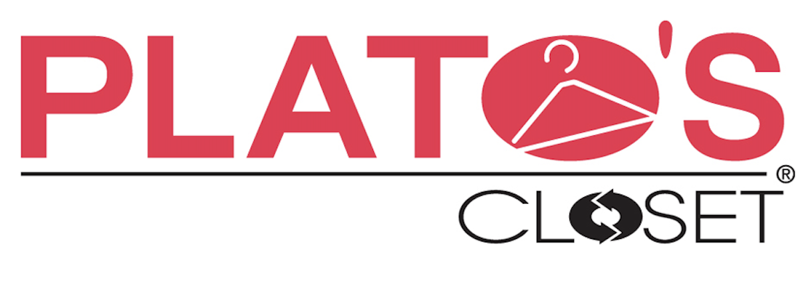
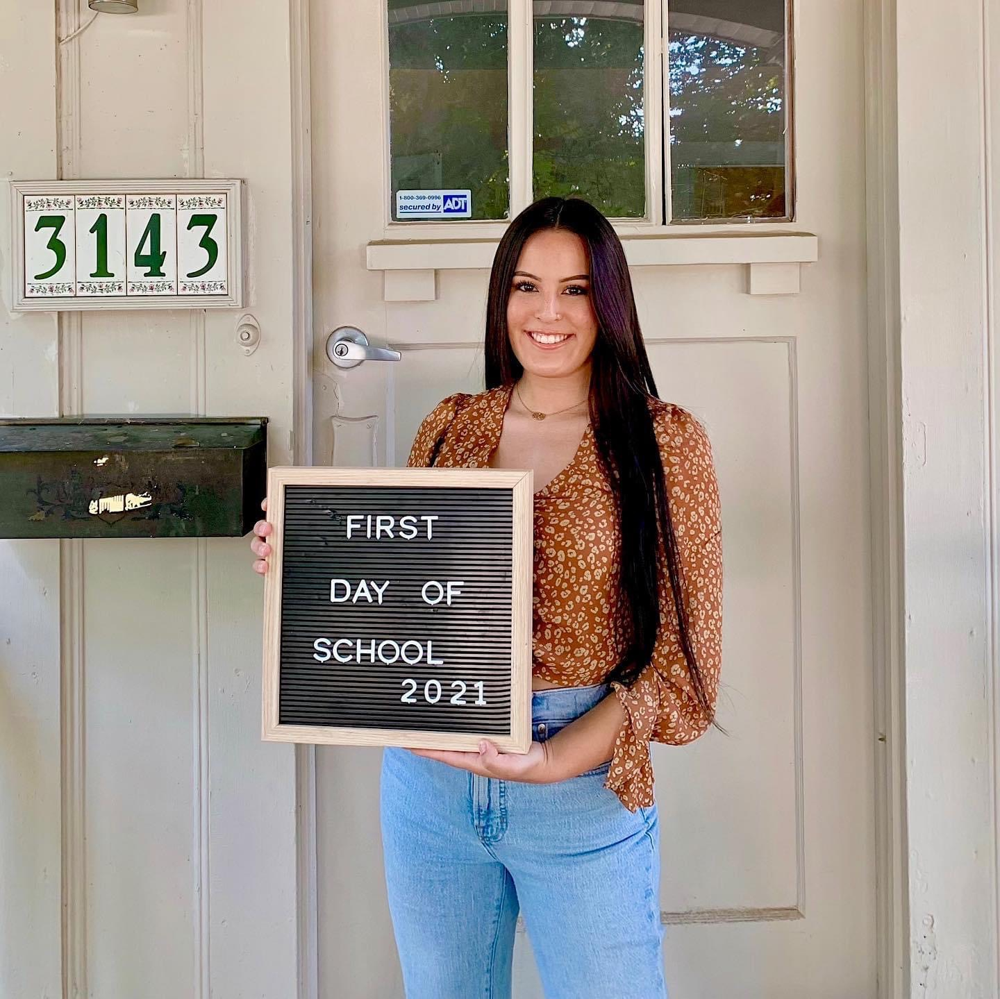

Experience
Kate Spade Cherry Creek
Store Associate/Key Holder
May 2021 - Present
- Responsible for ensuring exemplary customer service in the luxury retail industry by delivering the ultimate kate spade
experience through strong product knowledge, styling, and outreach/communication
- Developed a personal clientele through effective use of the selling skills, proactive client outreach and use of client book to
increase personal and store sales
- Responsible for achieving personal sales goals, ensuring store standards are executed daily, and executing operational tasks
UClub on 28th - American Campus Communities
Community Assistant
July 2020 - February 2021
- Helped students find their home away from home by making appointments, conducting tours, maintaining showrooms, and completing marketing follow-up processes needed to secure leases
- Responsible for providing unparalleled customer service and respect for residents. Tasked with proficiency in communication such as taking phone calls and answering emails, as well as filing personal information and secure legal documents
- Responsible for being well-versed in the lease and able to educate residents and parents on the entirety of its contents
Plato's Closet
Manager/Key Holder
March 2018 - March 2019
- Tasked with opening/closing the store with responsibilities including but not limited to: responsibility for key, opening/closing the till and responsibility for deposits as needed; developed proficiency in operating the point-of-sale system
- Became familiar with products, brands and prices and made product recommendations based on their features and properties suited to customer's needs

